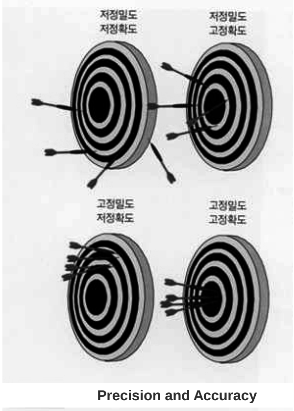
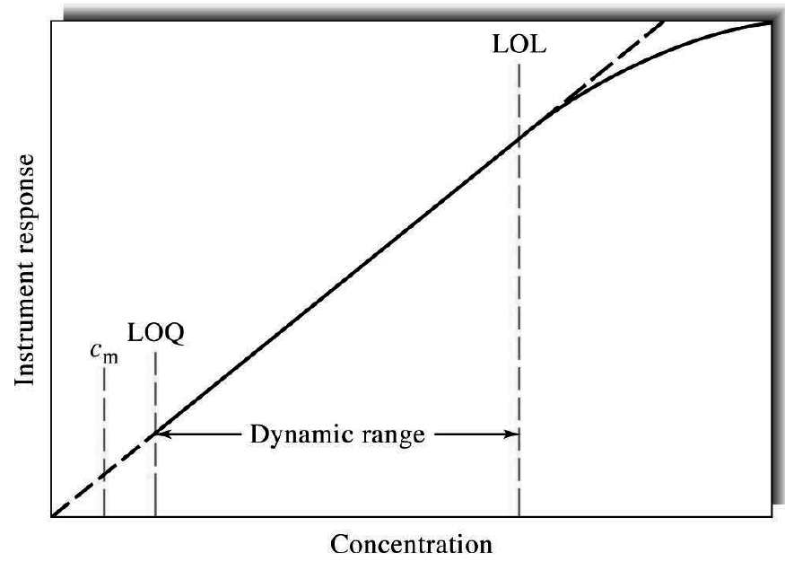
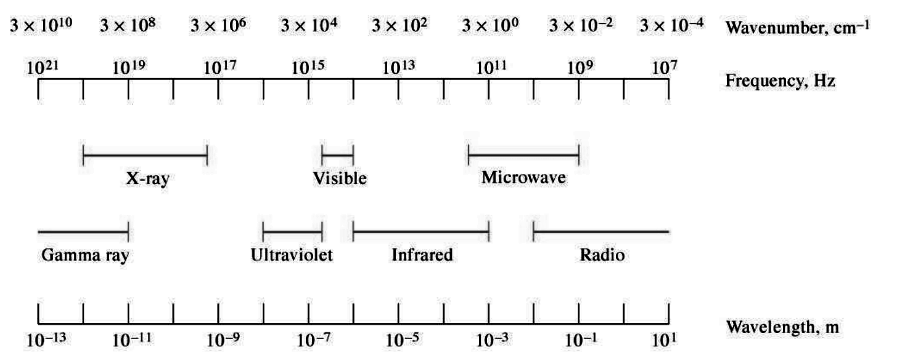
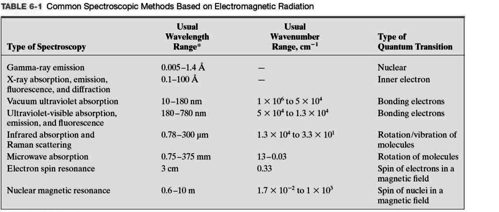
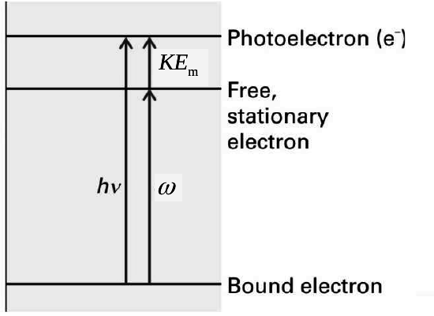
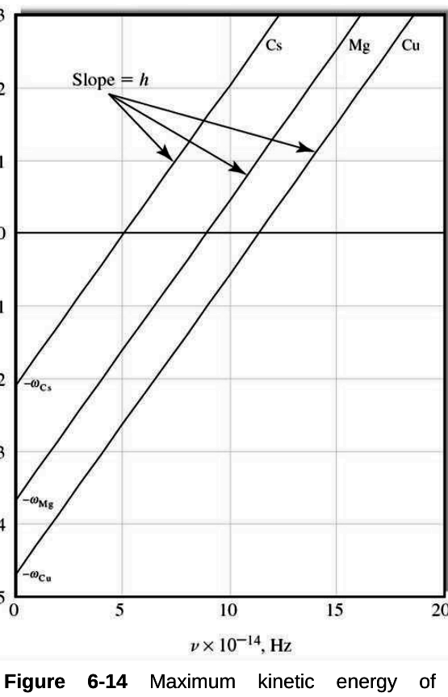
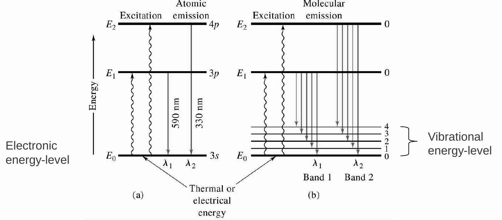
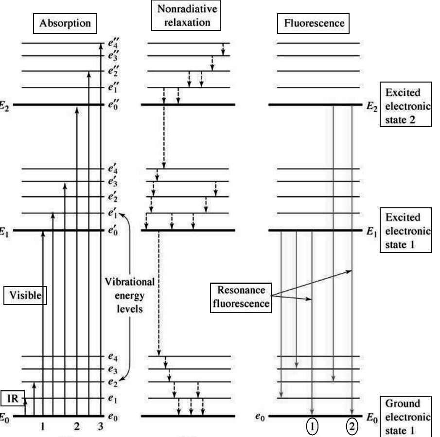
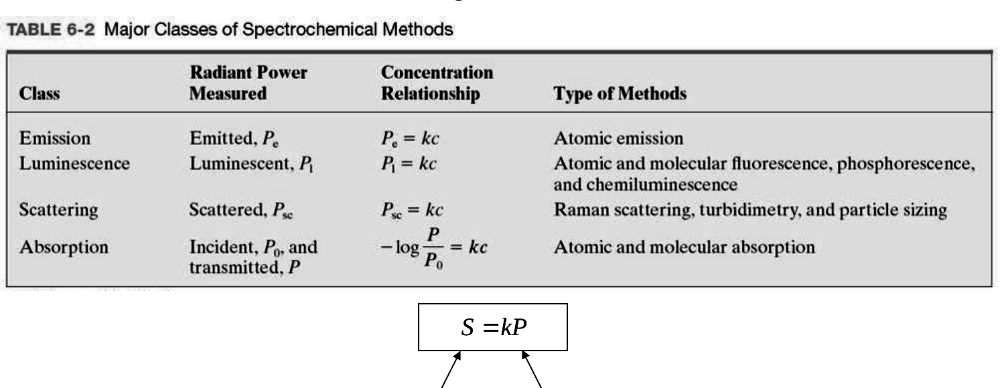

1-1. 분석화학과 기기분석 p.2~8
- 분석화학(analytical chemistry)은 시료의 화학 조성을 알아내는 방법을 다룬다.
- 정성분석(qualitative)은 원자·분자·작용기가 무엇인지 알려 준다. 정량분석(quantitative)은 성분이 얼마나 있는지 숫자로 알려 준다.
- 고전적 방법(classical)은 침전·추출·증류로 분리한 뒤 색, 끓는점, 용해도로 확인하고 무게(gravimetric)나 부피(volumetric)로 정량한다.
- 기기분석(instrumental)은 전도도, 전극전위, 빛의 흡수·방출, 질량 대 전하비, 형광 같은 물리적 성질을 잰다. 분리는 크로마토그래피와 전기영동으로 한다.
- 기기분석의 발전은 전자·컴퓨터 산업의 발전과 나란히 진행됐다.
측정 과정 블록도 Fig 1-1, p.5
에너지원(stimulus)이 시료(system under study)를 자극하고, 시료의 응답(response)이 분석 정보가 된다. 자극 에너지는 전자기, 전기, 기계, 핵에너지의 네 종류다.
데이터 영역(data domains) p.7~8
- 정보를 물리·화학적 성질이나 전기 신호로 나타내는(encoding) 방식을 data domain이라 한다.
- Nonelectrical domain: 길이, 밀도, 화학 조성, 빛의 세기, 압력 등이다. 측정의 최종 목표는 분석 대상의 성질에 비례하는 숫자를 얻는 것이다.
- Electrical domain: analog(전류·전압·전하의 크기), time(주파수·펄스폭·위상), digital(개수·직렬·병렬)로 나뉜다. Digital 영역은 두 영역에 걸친다.
- 형광계 예(Fig 1-3): 광원 세기에서 형광 세기, 광변환기의 전류 I, 저항의 전압 V(=IR, Ohm 법칙), 숫자 표시로 영역이 바뀐다.
1-3. 분석법 고르기와 성능 지표족보 p.10~16
문제 정의 질문 여섯 가지: 필요한 정확도, 시료 양, 농도 범위, 방해 성분, 매트릭스 성질, 시료 수.
성능 지표(figures of merit, Table 1-3)는 precision, bias, sensitivity, detection limit, dynamic range, selectivity이다. 그 밖에 속도, 편의성, 숙련도, 장비 비용, 시료당 비용을 본다(Table 1-4).
정밀도(Precision) p.12~13
같은 방법으로 얻은 데이터끼리 서로 일치하는 정도다. 지표는 Table 1-5에 있다.
s 절대 표준편차, RSD 상대 표준편차, sm 평균의 표준오차, CV 변동계수다.

p.13 정밀도와 정확도. 정밀도는 화살끼리 모인 정도, 정확도(accuracy)는 과녁 중심(참값)에 가까운 정도다. 고정밀·저정확은 모였지만 중심에서 벗어난 경우다.편향(Bias)과 감도(Sensitivity) p.14
- Bias는 계통오차(systematic, determinate error)의 크기다. 농도를 아는 표준기준물질(SRM)을 분석해 구한다.
μ 시료의 모평균 농도, τ 참값.
- 감도는 작은 농도 차이를 구별하는 능력이다. 검량선 기울기와 측정의 재현성(정밀도) 두 가지가 감도를 제한한다.
검량 감도(calibration sensitivity, IUPAC): 기울기 m이다.
분석 감도(analytical sensitivity): 기울기를 측정 표준편차로 나눈다.
m 기울기, c 농도, Sbl 바탕(blank) 신호, ss 측정의 표준편차.
검량 감도는 정밀도를 반영하지 못한다. 분석 감도는 기울기가 커도 잡음이 크면 작아지므로 실제 구별 능력을 나타낸다.
검출한계(Detection limit) p.15
알려진 신뢰수준에서 검출할 수 있는 최소 농도나 질량이다. 신호 크기와 바탕 신호 요동의 비에 좌우된다.
Sm 구별 가능한 최소 신호, S̄bl 바탕 신호 평균, sbl 바탕 표준편차. Table 1-3은 "blank plus three times standard deviation of the blank", 즉 k=3이다.
동적 범위(Dynamic range) p.16

Fig 1-13 LOQ(정량한계)부터 LOL(직선성 한계)까지가 동적 범위다. cm(검출한계)은 LOQ보다 낮다.
- LOQ는 정량이 가능한 가장 낮은 농도다. LOL은 검량선이 직선에서 정해진 만큼 벗어나는 농도다.
1-5. 전자기 복사의 파동성족보 p.19~33
- 분광학(spectroscopy)은 복사와 물질의 상호작용을 다루는 학문이다. 분광법(spectrometric methods)은 광전 변환기 등으로 복사 세기를 잰다.
- 복사는 파동-입자 이중성(wave-particle duality)을 가진다. 두 모형은 배타적이지 않고 서로 보완한다. 입자 모형에서 복사는 광자(photon)의 흐름이다.
파동의 특성 Fig 6-1, p.21
- 평면편광 복사에서 전기장과 자기장은 서로 수직으로 진동하고 진행 방향에도 수직이다.
- 진폭(A)은 최대점에서 전기장 벡터의 길이다. 주기(p)는 연속한 최대점이 한 점을 지나는 데 걸리는 시간이다. 진동수(ν)는 초당 진동 수이고 1/p와 같다. 파장(λ)은 이웃한 같은 위상 점 사이 거리다.
vi 매질 i에서의 속도, ν̄ 파수(wavenumber, cm⁻¹). 진공 속도 c=2.997292×10⁸ m·s⁻¹이다.
- 진동수는 광원이 정하고 매질이 바뀌어도 변하지 않는다. 속도는 매질 조성에 따라 달라지므로 파장이 바뀐다.
- 공기 중 속도는 c보다 약 0.03% 느리다. 유리에 들어가면 파장이 30% 넘게(500→330 nm) 줄었다가 공기로 나오면 되돌아온다(Fig 6-2).

Fig 6-3 전자기 스펙트럼. 왼쪽일수록 에너지가 크다(γ선, X선, UV, 가시, IR, 마이크로파, 라디오).
Table 6-1 분광법별 파장 범위와 양자 전이. UV-vis는 결합 전자, IR·Raman은 분자의 회전/진동, NMR은 자기장 속 핵 스핀이다.중첩(Superposition)과 Fourier 변환 p.24~26
- y는 시간 t에서 전기장 크기, φ는 위상각, ω=2πν는 각속도다.
- 여러 파동이 만나면 변위가 더해진다. 위상이 같으면 보강 간섭(constructive), 반대면 상쇄 간섭(destructive)이다.
- 진동수가 조금 다른 두 파동을 겹치면 맥놀이(beat)가 생긴다.
- Fourier 변환은 복잡한 파형을 단순한 사인파 성분으로 나누는 수학 연산이다. 중첩의 중요한 응용이다. 사인파 3개, 9개를 더하면 점점 사각파에 가까워진다(Fig 6-6).
회절(Diffraction) p.27
평행 빔이 좁은 틈을 지나며 휘어 퍼지는 현상이다. 틈 폭이 파장과 비슷할 때 뚜렷하다. 두 틈을 지난 빛은 밝고 어두운 무늬를 만든다.
n 간섭 차수(order), BC 두 틈 사이 거리. 회절발(grating) 단색화 장치의 원리다(2장 Instrumentation 참조).
투과(Transmission)와 굴절률 p.28
- 투명 물질 속에서 복사는 진공보다 느리게 진행한다. 진동수가 바뀌지 않으므로 상호작용은 영구적 에너지 전달이 아니다.
대부분 액체 1.3~1.8(물 1.33), 고체 1.3~2.5 이상(유리 1.52).
분산(Dispersion) Fig 6-9, p.29
- 분산은 굴절률이 파장(진동수)에 따라 변하는 현상이다.
- 정상 분산(normal): 진동수가 커질수록(파장이 짧을수록) 굴절률이 서서히 커진다.
- 이상 분산(anomalous): 흡수가 일어나는 진동수 근처에서 굴절률이 급격히 변한다.
굴절(Refraction): Snell 법칙 p.30
- 굴절은 두 매질에서 속도가 달라서 생긴다. 밀한 매질(M2, n 큼)로 들어가면 법선 쪽으로 꺾여 θ2<θ1이 된다.
반사(Reflection) p.31
수직 입사일 때다. Ir 반사 세기, I0 입사 세기. 굴절률 차이가 클수록 반사가 커진다.
산란(Scattering)의 종류 p.32
- 복사의 아주 작은 일부가 원래 경로에서 모든 각도로 퍼진다. 입자가 클수록 산란 세기가 커진다.
- Rayleigh scattering: 파장보다 훨씬 작은 분자나 분자 집합체에 의한 산란이다. 세기는 파장의 −4제곱(1/λ⁴), 입자 크기, 편극률(polarizability)의 제곱에 비례한다. 진동수는 그대로다(탄성 산란).
- Raman scattering: 산란광 일부의 진동수가 양자화된 만큼 바뀐다. 편극 과정에서 일어나는 진동 에너지 준위 전이 때문이다(5장).
Rayleigh 세기가 1/λ⁴에 비례하므로 짧은 파장(파란빛)이 훨씬 강하게 산란된다. [보충] 하늘이 파란 이유다.
편광(Polarization) Fig 6-11·12, p.33
- 비편광 빛은 전기장 벡터가 모든 평면에서 진동한다. 각 벡터를 서로 수직인 두 성분으로 나눌 수 있다.
- 평면편광(plane-polarized) 빛은 한 평면에서만 진동한다.
1-6. 복사의 양자역학적 성질족보 p.34~49
광전효과(Photoelectric effect) p.34~35
- 복사가 방출·흡수될 때는 에너지가 영구적으로 이동한다. 이것을 설명하려면 복사를 불연속 입자, 즉 광자(photon, quanta)의 흐름으로 봐야 한다(입자 모형).
- 1887년 Hertz가 빛을 비추면 대전 구 사이에 불꽃이 더 쉽게 튀는 것을 봤다. 1905년 Einstein이 이론으로 설명했다. 1916년 Millikan이 진공 광전관(Fig 6-13)으로 실험했다.
- 진공 광전관에서 빛을 받은 음극(cathode)이 전자를 내보낸다. 양극 전압을 거꾸로 걸어 전류가 0이 되는 전압이 저지 전압(stopping voltage) V0이다.
KEm 광전자의 최대 운동에너지, h 플랑크 상수(6.6254×10⁻³⁴ J·s), ω 일함수(work function): 전자를 금속 표면에서 떼어 내는 데 필요한 최소 에너지, e 전자 전하(−1.60×10⁻¹⁹ C), V0 저지 전압.

속박 전자가 hν를 받아 ω만큼 써서 자유 전자가 되고 나머지가 KEm이 된다.
Fig 6-14 Cs, Mg, Cu. 기울기는 모두 h, y절편은 −ω, x절편은 문턱 진동수다.
KEm은 빛의 세기가 아니라 진동수에만 비례한다. 문턱 진동수(ω/h)보다 낮은 빛은 아무리 세도 전자를 못 낸다. 세기는 튀어나오는 전자 수만 늘린다. [보충] 파동 모형으로는 설명이 안 되는 부분이다.
화학종의 에너지 상태 p.36
- 양자론의 두 가정: 원자·이온·분자는 정해진 불연속 에너지 상태로만 존재한다. 상태가 바뀔 때 두 상태의 에너지 차와 정확히 같은 에너지를 흡수하거나 방출한다.
- 에너지 상태에는 전자(electronic), 진동(vibrational), 회전(rotational) 상태가 있다. 바닥 상태(ground)와 들뜬 상태(excited)로 나뉜다. 간격은 전자 > 진동 > 회전 순이다.
복사와 물질의 상호작용 Fig 6-15~18, p.37~41
| 과정 | 내용 |
|---|
| Emission | 열·전기·화학 에너지로 들뜬 뒤 빛을 낸다. 화학반응이면 화학발광(chemiluminescence)이다. |
| Absorption | 들어온 P0 중 E1, E2에 맞는 파장만 흡수되고 P가 투과한다. |
| Photoluminescence | 빛을 흡수해 들뜬 뒤 빛(PL)을 다시 낸다. 형광과 인광이다. |
| Scattering | 가상 준위로 갔다가 hνex±hνv로 나온다(Raman의 Stokes/anti-Stokes). |
방출 스펙트럼 p.42~45
- 방출 스펙트럼에는 선(line), 띠(band), 연속(continuum) 스펙트럼이 있다(Fig 6-19 소금물 불꽃).
- 복사를 만드는 방법은 네 가지다. 전자 충격(X선), 전류·스파크·불꽃·아크(UV, 가시, IR), 빛 조사(형광), 발열 화학반응(화학발광)이다.

Fig 6-21 (a) Na 원자는 전자 준위끼리만 전이해 590·330 nm 선 스펙트럼을 낸다. (b) 분자는 전자 준위마다 진동 준위가 있어 가까운 여러 선이 모인 띠 스펙트럼을 낸다.
- 연속 스펙트럼은 고체를 백열(incandescence)까지 가열할 때 생긴다. 흑체 복사(black-body radiation)는 표면 재료가 아니라 온도로 정해진다. 온도가 높을수록 최대점이 짧은 파장으로 옮겨 간다(Fig 6-22).
- 가열 고체는 기기의 IR, 가시, 긴 파장 UV 광원으로 중요하다.
흡수(Absorption) p.46~47
- 흡수는 특정 진동수가 선택적으로 제거되며 에너지가 시료로 옮겨 가는 과정이다. 바닥 상태에서 들뜬 상태로 간다.
- 원자 흡수는 전자 전이만 있어 좁은 선이다(Na 증기).
- 분자 흡수는 E = Eelec + Evib + Erot이라 띠가 된다. 용액에서는 넓은 연속 띠가 된다(Fig 6-23).
- 자기장이 유도하는 흡수: NMR은 핵, ESR은 전자의 흡수다.

Fig 6-24 형광 유기분자의 준위. (a) 흡수(가시는 전자 전이, IR은 진동 전이) (b) 비복사 이완 (c) 형광(공명 형광 포함).이완(Relaxation) p.48
- 이완은 들뜬 원자·분자가 바닥 상태로 돌아가는 과정이다.
- 비복사 이완(nonradiative): 다른 분자와 충돌해 작은 단계로 에너지를 운동에너지로 잃는다.
- 형광(fluorescence)은 빠르고 들뜬 뒤 약 10⁻⁵ s 안에 끝난다. 인광(phosphorescence)은 10⁻⁵ s보다 길고 조사를 멈춘 뒤 몇 분, 몇 시간 이어지기도 한다.
- 공명 형광(resonance)은 흡수 파장과 같은 파장을 낸다. 비공명 형광(nonresonance)은 진동 이완 뒤 더 긴 파장을 낸다.
불확정성 원리 p.49
1927년 Heisenberg. 맥놀이 한 주기를 재려면 Δt ≥ 1/Δν가 필요하다. 시간 Δt 동안 잰 에너지는 적어도 h/Δt만큼 불확실하다.
1-7. 분광 측정의 정량족보 p.50~51
S 전압·전류 신호, P 복사력(radiant power, 단위 면적에 초당 도달하는 에너지).
Beer 법칙. A=abc에서 a 흡광도계수(absorptivity, L·g⁻¹·cm⁻¹), A=εbc에서 ε 몰흡광계수(L·mol⁻¹·cm⁻¹), b 광로 길이(cm), c 농도. %T = T×100이다. 한계는 2장에서 다룬다.

Table 6-2 분광법의 네 부류. 방출·발광·산란은 신호가 농도에 비례하고(P=kc), 흡수만 로그 관계다(−log P/P0=kc).